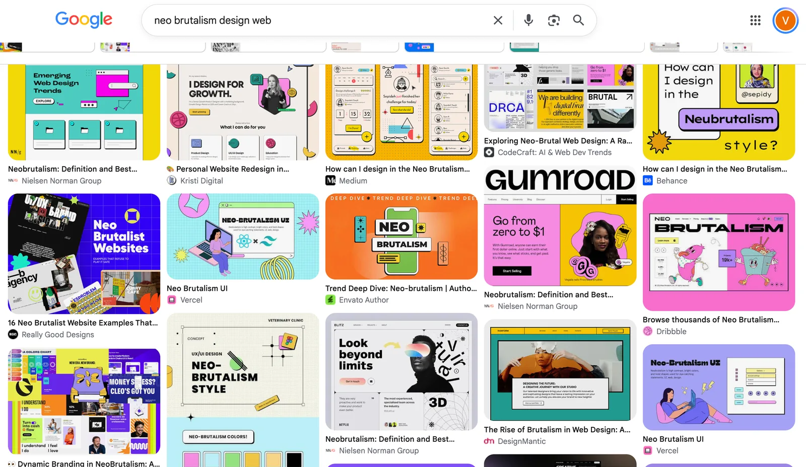
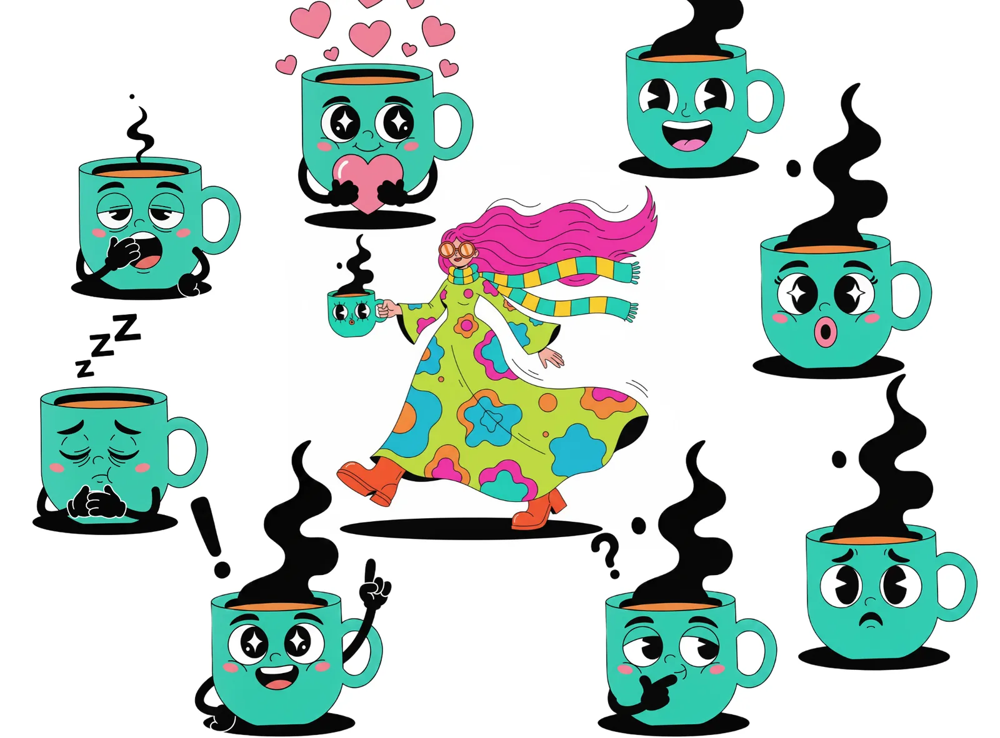
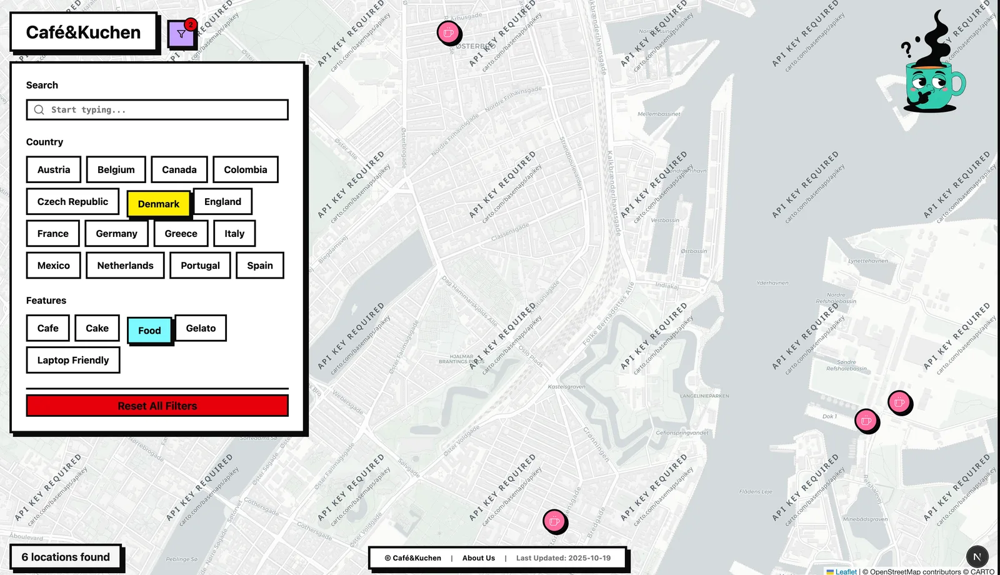
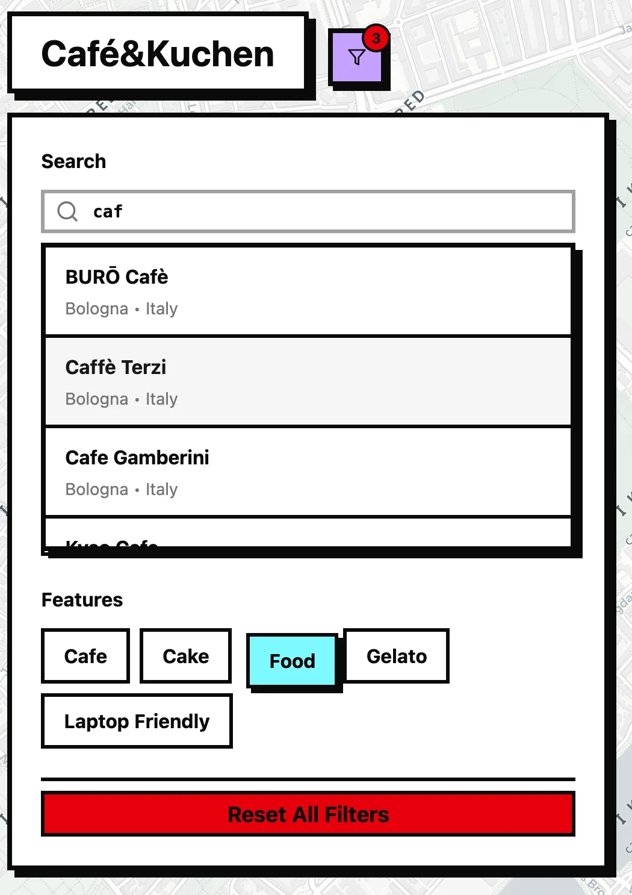
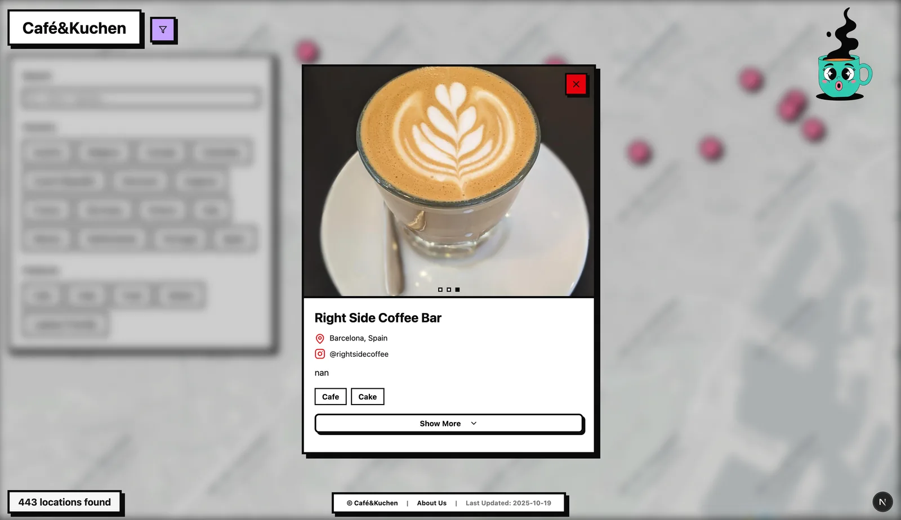
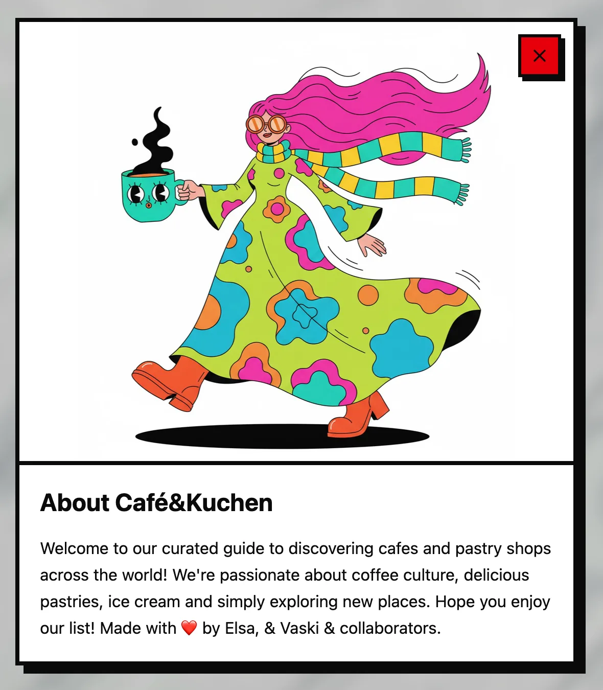
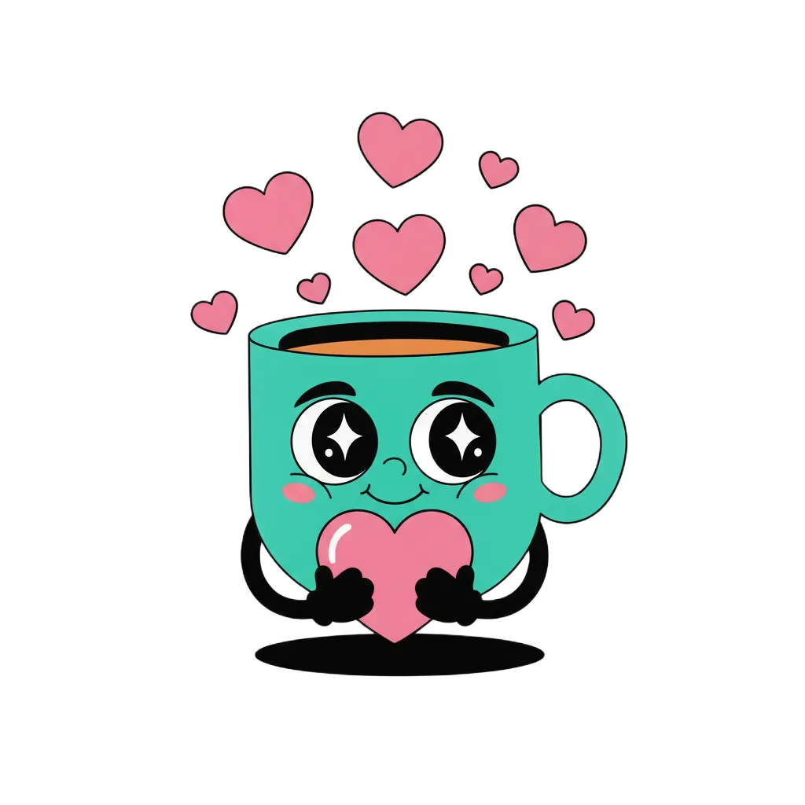

+------------------------------------------------------------+
| PROJECT TAG |
+------------------------------------------------------------+
| Project : around_the_world |
| Started : October 5, 2025 |
| Status : Mostly done |
| Repo : <private> |
| Site : https://cafe-and-kuchen.web.app/ |
+------------------------------------------------------------+
What is it?
A place to put all our pins of cafés, pastry shops, bakeries, gelaterias and other, along with our photos and text.
Background
We travel. We eat. We’re actually gastro-tourists. When visiting a new city, we decide on the cafés and bakeries we want to go to, and then we find things along the way to see. On your vacation, you can decide what to do.
Some of those cafés and bakeries turn out to be amazing! Yums!
Our friends know that we like to travel, so they often ask, “hey, is there a good place for coffee in Lisbon?”, “where’s a good place for gelato in Milan?”, and instead of sending them an email or a Google Sheets, we would rather send them a link to a site.
Needs
Pretty straight-forward: a map with pins where you click on the pins and you see a photo of the place + extra information (e.g, instagram). There should also be a way to filter based on location and type of place.
Neo Brutalism
For the styling, we went for a little something they call neo-brutalism. I prefer something a little more minimal (like this actual website), but we wanted something a bit more “fun”.
What is it? LMGTFY:

It looks like that. Very blocky. Bright. In your face. And maybe a little lazy because things don’t really need to make too much sense. Or maybe my simple engineer brain doesn’t understand the true essence of it.
Der Kaffeetassenmann
We wanted to have fun with this. We thought about the Microsoft Clippy assistant and wondered, “why don’t we create a coffee character?” For the name, we went with a German word because it’s still funny how nouns are created. Why not “coffee cup man”?Der Kaffeetassenmann! Of course, me, being devoid of artistic talent, I reached out for generative design for the actual look.
We iterated on a coffee cup character and produced a few poses. I had to then go in Inkscape to remove the background and resize the image so there’s consistency across. So, I did do something.

Flow
Landing on the website, it’s quite simple. It’s just a map with pink pins. Pressing on the funnel button opens up a modal to search and filter based on country and/or feature.


Clicking on a pin or using the search, this is what the café pop-up looks like. It shows the name of the place, location, instagram key, and other info. Photos can be viewed with the arrow keys or by clicking on the next/previous icons.

Behind it all, there’s a Google Sheets page that Elsa maintains and curates. There is also a Google Drive folder for our pictures.

And that’s sort of it.
Deployment
Keeping it simple, this is deployed on GCP Firebase Hosting. The images are converted to *.webp and stored in a bucket as-is in the repo.
Figured that we have about 150 MB of pictures and we’re not expecting crazy traffic or updating cadence, so let’s keep it simple and move to a bucket later when/if need be.
The rest of the site is a single-page application (SPA). And I have a Github Action to publish on a PR merge.
My wife maintains a list of the places on Google Sheets and curates images in a Google Drive folder. I have a script to export the Google Sheet file to JSON and convert the images to webp format to save on storage.
